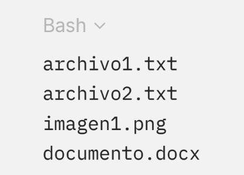
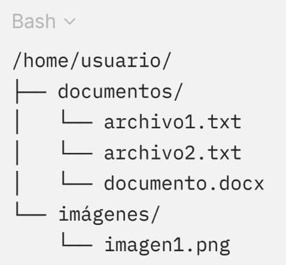

4.2.2 De directorios
Los directorios son cruciales para la organización de archivos, proporcionando una estructura jerárquica que agrupa archivos en carpetas y subcarpetas. Cada directorio incluye entradas que representan archivos y subdirectorios, facilitando la navegación por el sistema de archivos.
Existen diferentes maneras de implementar los directorios:
En este método, todos los archivos y carpetas están al mismo nivel sin una estructura jerárquica. Es fácil de implementar, pero no es práctico para sistemas grandes ya que encontrar archivos se vuelve difícil y pueden surgir conflictos al gestionar los nombres de los archivos.
Un ejemplo en un sistema con directorios planos, todos los archivos del sistema podrían estar en una sola carpeta, como en la siguiente Figura 6.
Figura 6.
Representación de sistema con directorios planos.

Los archivos se agrupan en carpetas relacionadas, lo que facilita su gestión y búsqueda.
Este método es el más utilizado en los sistemas operativos actuales. Los archivos se organizan en una estructura jerárquica de carpetas y subcarpetas. Sistemas como Linux, Windows y macOS emplean este esquema, donde el directorio raíz (/) en Linux y C:\ en Windows contiene otros directorios que a su vez pueden tener más archivos y carpetas.
Por ejemplo, una estructura jerárquica podría ser como en la siguiente Figura 7.
Figura 7.
Representación de sistema con directorios jerárquicos.

Los archivos se agrupan en carpetas relacionadas, lo que facilita su gestión y búsqueda.
Algunos sistemas de archivos emplean tablas hash para almacenar entradas de directorios, lo que mejora el rendimiento al buscar archivos en directorios grandes gracias a la capacidad del hash de encontrar rápidamente la entrada correcta. Sin embargo, este método es más complejo de implementar y mantener.